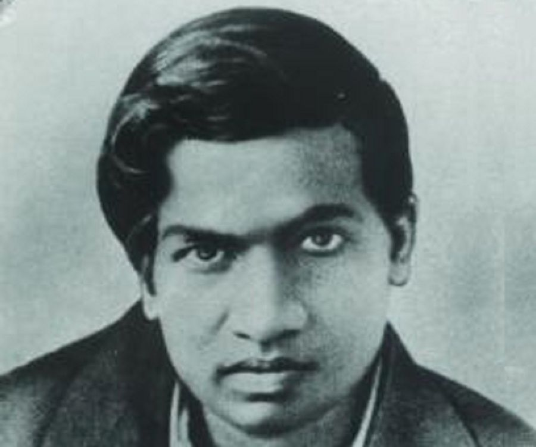

Mathematicians Name
Srinivasa Ramanujan

Srinivasa Ramanujan FRS was an Indian mathematician
who lived during the British Rule in India. Though he had almost no formal
training in pure mathematics,
he made substantial contributions to mathematical .

Aryabhata or Aryabhata I was the first of
the major mathematician-astronomers from the classical age of Indian
mathematics and Indian astronomy. His works include the Āryabhaṭīya and
the Arya-siddhanta. For his explicit mention of the relativity of motion,
he also qualifies as a major early physicist.
Made by- Priyangshu Chanda
class- 7 RollNo- 30